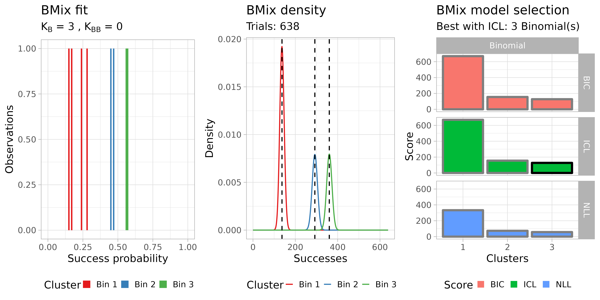

library(dplyr)
#>
#> Attaching package: 'dplyr'
#> The following objects are masked from 'package:stats':
#>
#> filter, lag
#> The following objects are masked from 'package:base':
#>
#> intersect, setdiff, setequal, union
library(TAPACLOTH)Requirements
TAPACLOTH can be used to to estimate the purity of a cancer sample from the VAF spectrum of somatic mutations detected from targeted panel sequencing.
Practically, the TAPACLOTH model can also be used with other gene sequencing assays. However, if one has access to more advanced data such as high-resolution whole-genome sequening, we suggest using other quality control methodologies.
Inputs format
It should be a tibble with sample(sample name), gene(name of the target gene), nv (number of reads with variant), dp (coverage), VAF (variant allele frequency) and purity (sample purity) columns.
For example:
data = dplyr::tibble(sample = "test",
gene = paste0("test gene ", 1:10),
nv = c(50, 60, 100, 250, 225, 270, 35, 375, 400, 450),
dp = 500,
VAF = c(10, 12, 20, 50, 45, 54, 61, 75, 80, 90)/100,
purity = 1
)
print(data)
#> # A tibble: 10 × 6
#> sample gene nv dp VAF purity
#> <chr> <chr> <dbl> <dbl> <dbl> <dbl>
#> 1 test test gene 1 50 500 0.1 1
#> 2 test test gene 2 60 500 0.12 1
#> 3 test test gene 3 100 500 0.2 1
#> 4 test test gene 4 250 500 0.5 1
#> 5 test test gene 5 225 500 0.45 1
#> 6 test test gene 6 270 500 0.54 1
#> 7 test test gene 7 35 500 0.61 1
#> 8 test test gene 8 375 500 0.75 1
#> 9 test test gene 9 400 500 0.8 1
#> 10 test test gene 10 450 500 0.9 1TAPACLOTH infers sample purity by fitting the VAF spectrum of somatic mutations with a mixture of Binomial or Beta-Binomial distributions, using BMix.
In this example, the input purity estimate of the cancer sample is correct, and the VAF spectrum of somatic mutations is fitted using a mixture of Binomial distributions:
purity_bmix = estimate_purity(data = data,
sample_name = "test",
model = "Binomial",
purity = data$purity[1],
eps = 0.01)
#>
#> ── test ────────────────────────────────────────────────────────────────────────
#> Warning: replacing previous import 'cli::num_ansi_colors' by
#> 'crayon::num_ansi_colors' when loading 'BMix'
#> Warning: replacing previous import 'crayon::%+%' by 'ggplot2::%+%' when loading
#> 'BMix'
#> ✔ Loading BMix, 'Binomial and Beta-Binomial univariate mixtures'. Support : <https://caravagnalab.github.io/BMix/>
#>
#> ── BMix fit ────────────────────────────────────────────────────────────────────
#> ℹ Binomials k_B = 1, 2, and 3, Beta-Binomials k_BB = 0; 6 fits to run.
#> Warning: replacing previous import 'cli::num_ansi_colors' by
#> 'crayon::num_ansi_colors' when loading 'easypar'
#> ℹ Bmix best fit completed in 0 mins
#> ── [ BMix ] My BMix model n = 10 with k = 3 component(s) (3 + 0) ───────────────
#> • Clusters: π = 40% [Bin 1], 30% [Bin 2], and 30% [Bin 3], with π > 0.
#> • Binomial Bin 1 with mean = 0.1225.
#> • Binomial Bin 2 with mean = 0.816666666666667.
#> • Binomial Bin 3 with mean = 0.496666666666667.
#> ℹ Score (model selection): ICL = 195.4.
#> Warning: `guides(<scale> = FALSE)` is deprecated. Please use `guides(<scale> =
#> "none")` instead.
#> Warning: Removed 6 rows containing missing values (geom_bar).
#> Warning: Graphs cannot be horizontally aligned unless the axis parameter is set.
#> Placing graphs unaligned.
print(purity_bmix)
#> ── [ TAPACLOTH ] Purity estimate using BMix: ─────────────────────────────────
#> ── [ BMix ] My BMix model n = 10 with k = 3 component(s) (3 + 0) ───────────────
#> • Clusters: π = 40% [Bin 1], 30% [Bin 2], and 30% [Bin 3], with π > 0.
#> • Binomial Bin 1 with mean = 0.1225.
#> • Binomial Bin 2 with mean = 0.816666666666667.
#> • Binomial Bin 3 with mean = 0.496666666666667.
#> ℹ Score (model selection): ICL = 195.4.
#> ── [ TAPACLOTH ] Data: ───────────────────────────────────────────────────────
#> # A tibble: 10 × 8
#> sample gene nv dp VAF purity purity_bmix purity_error
#> <chr> <chr> <dbl> <dbl> <dbl> <dbl> <dbl> <dbl>
#> 1 test test gene 1 50 500 0.1 1 0.993 0.00671
#> 2 test test gene 2 60 500 0.12 1 0.993 0.00671
#> 3 test test gene 3 100 500 0.2 1 0.993 0.00671
#> 4 test test gene 4 250 500 0.5 1 0.993 0.00671
#> 5 test test gene 5 225 500 0.45 1 0.993 0.00671
#> 6 test test gene 6 270 500 0.54 1 0.993 0.00671
#> 7 test test gene 7 35 500 0.61 1 0.993 0.00671
#> 8 test test gene 8 375 500 0.75 1 0.993 0.00671
#> 9 test test gene 9 400 500 0.8 1 0.993 0.00671
#> 10 test test gene 10 450 500 0.9 1 0.993 0.00671The parameter eps is used to compare peaks of the mixture distributions with the input purity. In cases when the VAF spectrum is fitted with a mixture of 2 distributions, it is hard to determine which one to use for purity estimation. In these cases the distribution that gives the most similar estimate to the input purity is chosen, given that its peak is not further then eps from the input estimate.
The inferred purity matches the true value and TAPACLOTH reports a ~0 purity error.
In this example, the input purity estimate of the cancer sample is underestimated.
data = dplyr::tibble(sample = "test",
gene = paste0("test gene ", 1:10),
nv = c(50, 60, 100, 250, 225, 270, 35, 375, 400, 450),
dp = 500,
VAF = c(10, 12, 20, 50, 45, 54, 61, 75, 80, 90)/100,
purity = 0.4
)
print(data)
#> # A tibble: 10 × 6
#> sample gene nv dp VAF purity
#> <chr> <chr> <dbl> <dbl> <dbl> <dbl>
#> 1 test test gene 1 50 500 0.1 0.4
#> 2 test test gene 2 60 500 0.12 0.4
#> 3 test test gene 3 100 500 0.2 0.4
#> 4 test test gene 4 250 500 0.5 0.4
#> 5 test test gene 5 225 500 0.45 0.4
#> 6 test test gene 6 270 500 0.54 0.4
#> 7 test test gene 7 35 500 0.61 0.4
#> 8 test test gene 8 375 500 0.75 0.4
#> 9 test test gene 9 400 500 0.8 0.4
#> 10 test test gene 10 450 500 0.9 0.4When TAPACLOTH is used to infer purity from the data, it retrieves the correct purity and reports an error on the input purity of ~60%.
purity_bmix = estimate_purity(data = data,
sample_name = "test",
model = "Binomial",
purity = data$purity[1],
eps = 0.01)
#>
#> ── test ────────────────────────────────────────────────────────────────────────
#>
#> ── BMix fit ────────────────────────────────────────────────────────────────────
#> ℹ Binomials k_B = 1, 2, and 3, Beta-Binomials k_BB = 0; 6 fits to run.
#> ℹ Bmix best fit completed in 0 mins
#> ── [ BMix ] My BMix model n = 10 with k = 3 component(s) (3 + 0) ───────────────
#> • Clusters: π = 40% [Bin 3], 30% [Bin 1], and 30% [Bin 2], with π > 0.
#> • Binomial Bin 1 with mean = 0.816666666666667.
#> • Binomial Bin 2 with mean = 0.496666666666667.
#> • Binomial Bin 3 with mean = 0.1225.
#> ℹ Score (model selection): ICL = 193.12.
#> Warning: `guides(<scale> = FALSE)` is deprecated. Please use `guides(<scale> =
#> "none")` instead.
#> Warning: Removed 6 rows containing missing values (geom_bar).
#> Warning: Graphs cannot be horizontally aligned unless the axis parameter is set.
#> Placing graphs unaligned.
print(purity_bmix)
#> ── [ TAPACLOTH ] Purity estimate using BMix: ─────────────────────────────────
#> ── [ BMix ] My BMix model n = 10 with k = 3 component(s) (3 + 0) ───────────────
#> • Clusters: π = 40% [Bin 3], 30% [Bin 1], and 30% [Bin 2], with π > 0.
#> • Binomial Bin 1 with mean = 0.816666666666667.
#> • Binomial Bin 2 with mean = 0.496666666666667.
#> • Binomial Bin 3 with mean = 0.1225.
#> ℹ Score (model selection): ICL = 193.12.
#> ── [ TAPACLOTH ] Data: ───────────────────────────────────────────────────────
#> # A tibble: 10 × 8
#> sample gene nv dp VAF purity purity_bmix purity_error
#> <chr> <chr> <dbl> <dbl> <dbl> <dbl> <dbl> <dbl>
#> 1 test test gene 1 50 500 0.1 0.4 0.993 0.597
#> 2 test test gene 2 60 500 0.12 0.4 0.993 0.597
#> 3 test test gene 3 100 500 0.2 0.4 0.993 0.597
#> 4 test test gene 4 250 500 0.5 0.4 0.993 0.597
#> 5 test test gene 5 225 500 0.45 0.4 0.993 0.597
#> 6 test test gene 6 270 500 0.54 0.4 0.993 0.597
#> 7 test test gene 7 35 500 0.61 0.4 0.993 0.597
#> 8 test test gene 8 375 500 0.75 0.4 0.993 0.597
#> 9 test test gene 9 400 500 0.8 0.4 0.993 0.597
#> 10 test test gene 10 450 500 0.9 0.4 0.993 0.597The object purity_bmix also contains a plot showing results of the mixture fit:
purity_bmix$plot_bmix
TAPACLOTH purity estimate can be used as a preliminary step to the classification task. In this example, the underestimated input purity is replaced with TAPACLOTH inferred purity, and classification task is re-run:
data = dplyr::rename(purity_bmix$data,
input_purity = purity,
purity = purity_bmix)
print(data)
#> # A tibble: 10 × 8
#> sample gene nv dp VAF input_purity purity purity_error
#> <chr> <chr> <dbl> <dbl> <dbl> <dbl> <dbl> <dbl>
#> 1 test test gene 1 50 500 0.1 0.4 0.993 0.597
#> 2 test test gene 2 60 500 0.12 0.4 0.993 0.597
#> 3 test test gene 3 100 500 0.2 0.4 0.993 0.597
#> 4 test test gene 4 250 500 0.5 0.4 0.993 0.597
#> 5 test test gene 5 225 500 0.45 0.4 0.993 0.597
#> 6 test test gene 6 270 500 0.54 0.4 0.993 0.597
#> 7 test test gene 7 35 500 0.61 0.4 0.993 0.597
#> 8 test test gene 8 375 500 0.75 0.4 0.993 0.597
#> 9 test test gene 9 400 500 0.8 0.4 0.993 0.597
#> 10 test test gene 10 450 500 0.9 0.4 0.993 0.597
classified_data = run_classifier(
data = data,
alpha_level = 1e-3,
model = "Beta-Binomial",
rho = 0.01
)
#>
#> ── test ────────────────────────────────────────────────────────────────────────
print(classified_data)
#> ── [ TAPACLOTH ] Test using Beta-Binomial model, with overdispersion parameter
#> # A tibble: 10 × 9
#> sample gene nv dp VAF input_purity purity purity_error class_binom
#> <chr> <chr> <dbl> <dbl> <dbl> <dbl> <dbl> <dbl> <chr>
#> 1 test test g… 50 500 0.1 0.4 0.993 0.597 Subclonal
#> 2 test test g… 60 500 0.12 0.4 0.993 0.597 Subclonal
#> 3 test test g… 100 500 0.2 0.4 0.993 0.597 Subclonal
#> 4 test test g… 250 500 0.5 0.4 0.993 0.597 Clonal
#> 5 test test g… 225 500 0.45 0.4 0.993 0.597 Clonal
#> 6 test test g… 270 500 0.54 0.4 0.993 0.597 Clonal
#> 7 test test g… 35 500 0.61 0.4 0.993 0.597 Subclonal
#> 8 test test g… 375 500 0.75 0.4 0.993 0.597 Clonal LOH
#> 9 test test g… 400 500 0.8 0.4 0.993 0.597 Clonal LOH
#> 10 test test g… 450 500 0.9 0.4 0.993 0.597 Clonal LOH
plot(classified_data, target_gene = "test gene 5", sample_name = "test")
#> ✔ Loading CNAqc, 'Copy Number Alteration quality check'. Support : <https://caravagn.github.io/CNAqc/>
#> Warning: Removed 6 rows containing missing values (geom_bar). ```
```